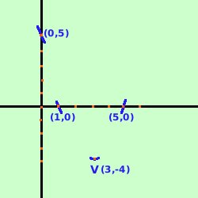
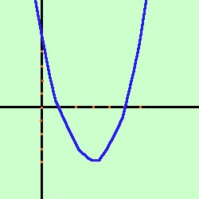

Disegniamo la parabola di equazione
y= x2
- 6x + 5

Troviamo prima le coordinate del vertice V
| V= (
|
b
-  , ,
2a
|
b2-4ac
- )
4a
|
abbiamo
a = 1
b = -6
c = 5
quindi
| V= (
|
-6
- ,
2·1
|
(-6)2-4·1·5
- )
4·1
|
| V= (
|
6
,
2
|
36-20
- )
4
|
V = (3, -4)
Intersezioni con gli assi
- Intersezioni asse x: faccio il sistema fra l'asse x (y=0) e
l'equazione della parabola
 y = 0
y = 0
y= x2
- 6x + 5
y = 0
x2
- 6x + 5 = 0
risolvo l'equazione di secondo
grado ed ottengo
x1 = 1
x2 = 5
quindi i punti di intersezione con l'asse delle x sono
(1,0) (5,0)

- Intersezioni asse y: faccio il sistema fra l'asse y (x=0) e
l'equazione della parabola
x = 0
y= x2
- 6x + 5
x = 0
y = 5 = 0
quindi il punto di intersezione con l'asse delle y e'
(0,5)
Adesso congiungo i punti con una curva continua ed ottengo il grafico della
parabola
|